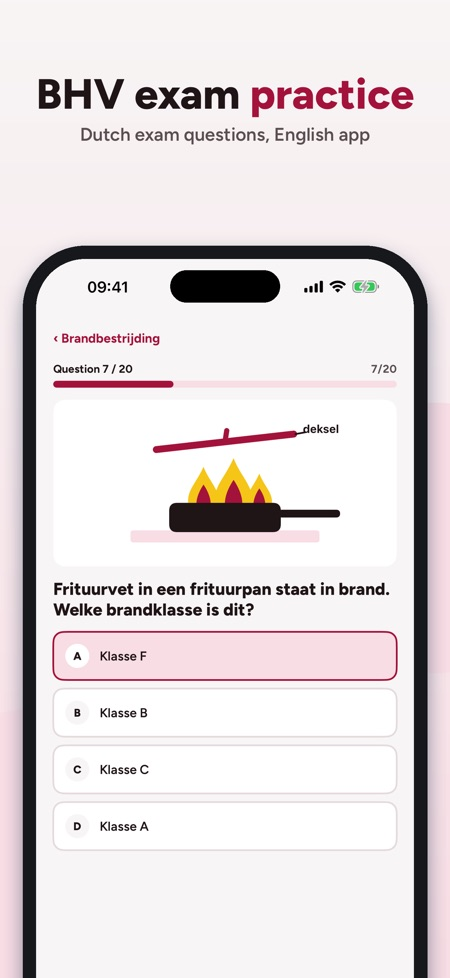
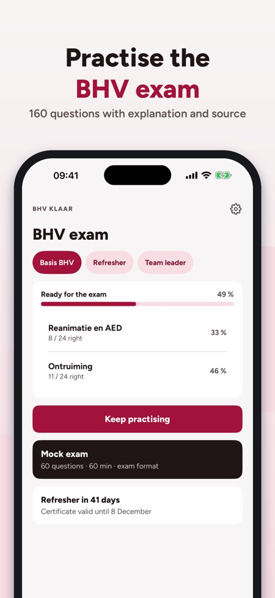
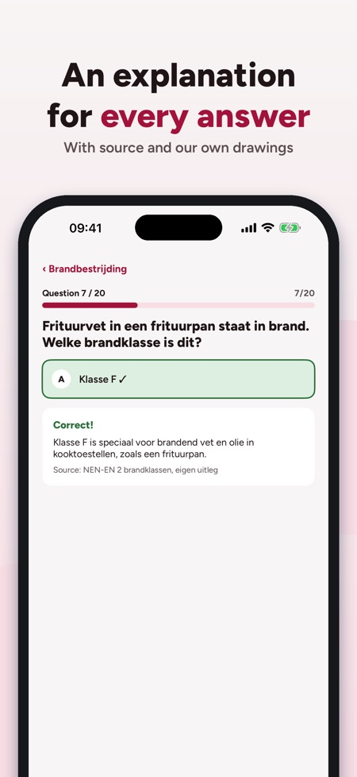

Eerste hulp en ploegleider. Practise the Dutch BHV exam and your refresher: questions with explanations, mock exams, fire classes and a certificate reminder – offline.



BHV Klaar helps you practise for the Dutch BHV (company emergency response) exam and the yearly refresher – fire, evacuation, first aid and CPR, with an explanation for every answer.
The app interface is in English; the questions and explanations are in Dutch, the language of the BHV exam.
You can use 20 questions, the glossary and the checklist without a purchase. The full version is a one-time purchase that unlocks all questions, mock exams and statistics. No subscription.
BHV Klaar is independent and not affiliated with NIBHV, any training provider or the government. You get your certificate from your course.